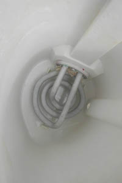

Vee karedust võib defineerida kui vee võimet vahu tekitamiseks seebiga tänu erinevatele lahustunud sooladele (peamiselt kaltsiumi- ja magneesiumisooladele). Vihmavesi on pehme ja ei sisalda mineraale, kuid läbi lubjakivi või kriiti sisaldava pinnase nõrgudes rikastatakse seda keemiliste ühenditega. Lisaks väga olulisele rollile veekogudes, võivad aga needsamad soolad põhjustada ebameeldivat katlakivi veeboilerites, torudes ja veekeetjates.
Katlakivi meie igapäevaelus